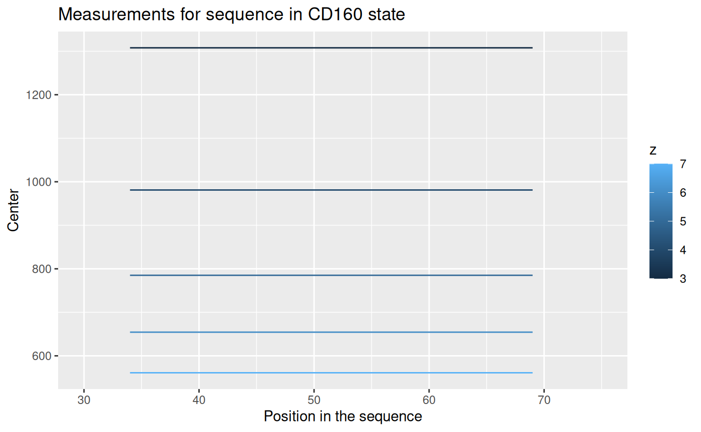

Data aggregation
transformation.RmdThe aggregation of the hydrogen-deuterium exchange experimental data is complex. This article describes the process step by step for a better understanding of the data transformation.
Aggregation of the data - visualization
## [1] ""Let’s see how the data is transformed. We will use the example file “KD_180110_CD160_HVEM.csv” from the HaDeX package and focus on just one peptide - “LCKDRSGDCSPETSLKQLRLKRDPGIDGVGEISSQL” in the state “CD160”. The measurement was made for time point 1 min.
Below is shown the original and not aggregated data for chosen peptide.
## Protein Start End Sequence Modification
## <char> <int> <int> <char> <lgcl>
## 1: db_CD160 34 69 LCKDRSGDCSPETSLKQLRLKRDPGIDGVGEISSQL NA
## 2: db_CD160 34 69 LCKDRSGDCSPETSLKQLRLKRDPGIDGVGEISSQL NA
## 3: db_CD160 34 69 LCKDRSGDCSPETSLKQLRLKRDPGIDGVGEISSQL NA
## 4: db_CD160 34 69 LCKDRSGDCSPETSLKQLRLKRDPGIDGVGEISSQL NA
## 5: db_CD160 34 69 LCKDRSGDCSPETSLKQLRLKRDPGIDGVGEISSQL NA
## 6: db_CD160 34 69 LCKDRSGDCSPETSLKQLRLKRDPGIDGVGEISSQL NA
## 7: db_CD160 34 69 LCKDRSGDCSPETSLKQLRLKRDPGIDGVGEISSQL NA
## 8: db_CD160 34 69 LCKDRSGDCSPETSLKQLRLKRDPGIDGVGEISSQL NA
## 9: db_CD160 34 69 LCKDRSGDCSPETSLKQLRLKRDPGIDGVGEISSQL NA
## 10: db_CD160 34 69 LCKDRSGDCSPETSLKQLRLKRDPGIDGVGEISSQL NA
## 11: db_CD160 34 69 LCKDRSGDCSPETSLKQLRLKRDPGIDGVGEISSQL NA
## 12: db_CD160 34 69 LCKDRSGDCSPETSLKQLRLKRDPGIDGVGEISSQL NA
## 13: db_CD160 34 69 LCKDRSGDCSPETSLKQLRLKRDPGIDGVGEISSQL NA
## 14: db_CD160 34 69 LCKDRSGDCSPETSLKQLRLKRDPGIDGVGEISSQL NA
## 15: db_CD160 34 69 LCKDRSGDCSPETSLKQLRLKRDPGIDGVGEISSQL NA
## 16: db_CD160 34 69 LCKDRSGDCSPETSLKQLRLKRDPGIDGVGEISSQL NA
## 17: db_CD160 34 69 LCKDRSGDCSPETSLKQLRLKRDPGIDGVGEISSQL NA
## 18: db_CD160 34 69 LCKDRSGDCSPETSLKQLRLKRDPGIDGVGEISSQL NA
## 19: db_CD160 34 69 LCKDRSGDCSPETSLKQLRLKRDPGIDGVGEISSQL NA
## 20: db_CD160 34 69 LCKDRSGDCSPETSLKQLRLKRDPGIDGVGEISSQL NA
## Protein Start End Sequence Modification
## MaxUptake MHP State Exposure File z Inten
## <num> <num> <char> <num> <char> <int> <num>
## 1: 33 3900.991 CD160 1 KD_160530_CD160_1min_01 3 325032
## 2: 33 3900.991 CD160 1 KD_160530_CD160_1min_01 4 753259
## 3: 33 3900.991 CD160 1 KD_160530_CD160_1min_01 5 1340447
## 4: 33 3900.991 CD160 1 KD_160530_CD160_1min_01 6 2076956
## 5: 33 3900.991 CD160 1 KD_160530_CD160_1min_01 7 759271
## 6: 33 3900.991 CD160 1 KD_160530_CD160_1min_02 3 239810
## 7: 33 3900.991 CD160 1 KD_160530_CD160_1min_02 4 583325
## 8: 33 3900.991 CD160 1 KD_160530_CD160_1min_02 5 1011160
## 9: 33 3900.991 CD160 1 KD_160530_CD160_1min_02 6 1584254
## 10: 33 3900.991 CD160 1 KD_160530_CD160_1min_02 7 600218
## 11: 33 3900.991 CD160 1 KD_160530_CD160_1min_03 3 176788
## 12: 33 3900.991 CD160 1 KD_160530_CD160_1min_03 4 402630
## 13: 33 3900.991 CD160 1 KD_160530_CD160_1min_03 5 746309
## 14: 33 3900.991 CD160 1 KD_160530_CD160_1min_03 6 1117344
## 15: 33 3900.991 CD160 1 KD_160530_CD160_1min_03 7 397718
## 16: 33 3900.991 CD160 1 KD_160530_CD160_1min_04 3 189258
## 17: 33 3900.991 CD160 1 KD_160530_CD160_1min_04 4 441817
## 18: 33 3900.991 CD160 1 KD_160530_CD160_1min_04 5 796722
## 19: 33 3900.991 CD160 1 KD_160530_CD160_1min_04 6 1186263
## 20: 33 3900.991 CD160 1 KD_160530_CD160_1min_04 7 451071
## MaxUptake MHP State Exposure File z Inten
## Center
## <num>
## 1: 1307.8329
## 2: 981.0960
## 3: 785.0905
## 4: 654.3858
## 5: 561.0548
## 6: 1307.7777
## 7: 981.0817
## 8: 785.0811
## 9: 654.4194
## 10: 561.0268
## 11: 1307.8942
## 12: 981.1597
## 13: 785.0906
## 14: 654.4344
## 15: 561.0833
## 16: 1307.8739
## 17: 981.1656
## 18: 785.1220
## 19: 654.4411
## 20: 561.0588
## CenterAs we can see from the column, there are four replicates of the experiment. Each measurement of a replicate provide values for different possible charge values for each peptide. The result of a measurement is in column - this is a geometrical centroid of an isotopic envelope - the product of the measurement from a mass spectrometer.
Let’s take a look for values for each replicate.

The centroid values for different charge values are not useful. We have to transform it to the mass values, according to an equation:
The results are shown below.

This results are just for one repetition. We have four of them:
Values from each replicate are aggregated into one value, using weighted mean (with intensity value as weight):

The results from replicates are aggregated into the final result (mean), and the uncertainty (standard deviation of the mean) is calculated.

Now we have the mass value for chosen peptide in the chosen state,
measured in the chosen time point. This calculation is done for every
other peptide, and these values of mass and uncertainty are used in the
calculation of deuterium uptake, as described in the
vignette("datafiles") article.